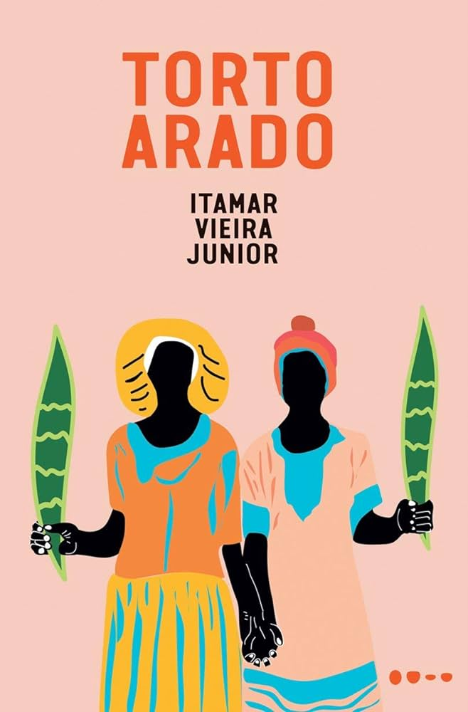

Torto Arado
Preço: R$ 35,00
Clássico, instigante, arrebatador: assim pode ser definido Torto Arado, romance do jovem escritor baiano Itamar Vieira Junior. Laureado com o Prêmio Leya em 2018, teve sua primeira edição no mesmo ano em terras portuguesas. Desde 2019, quando foi lançado no Brasil pela editora Todavia, tem acumulado sucesso de público e de crítica. Em 2020, venceu os prêmios Jabuti e Oceanos. No momento em que escrevo essa breve resenha, no campo literário e nas páginas de jornais, sites e revistas dedicados ao assunto, não se fala em outra coisa.
Uma obra polifônica, marcada pelas narrativas das irmãs Bibiana e Belonísia, e de uma entidade encantada, vozes femininas que expressam memórias coletivas e atribuladas de desigualdades raciais, sociais e de gênero, e também evocam as resistências ancestrais dos povos quilombolas, suas lutas e ligações com a terra.